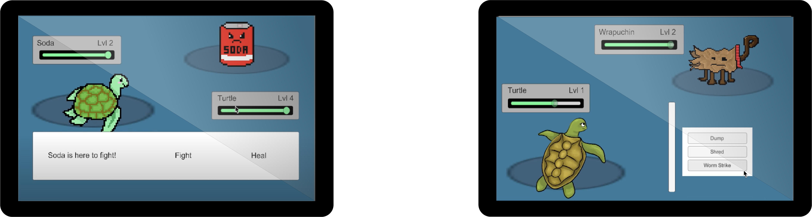
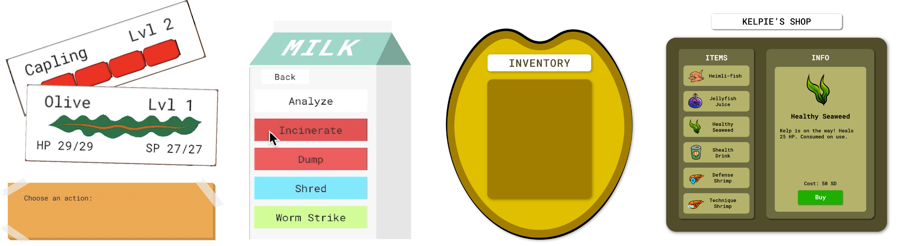

Developed in 2020
Roles: Developer, Visual Artist
Check out our website at tidalwastegame.com
Tidal Waste is an educational turn-based role playing game targeted to an audience of 10-16 year olds. The game focuses around a sea turtle named Olive, who washes up on the shore of a garbage patch in search of food to feed her family.
As Olive explores the garbage patch, she meets other sea creatures, as well as enemies that are reminiscent of various types of trash. You must learn the correct way to dispose of these different types of waste in order to help Olive continue her journey. You’re rewarded with extra damage as well as sometimes items, sand dollars, and experience for choosing the correct attack, but there are negative effects if you use the wrong one. Since disposing of waste incorrectly has a negative effect on our ecosystem, if you dispose of waste incorrectly in the game, you will see negative effects in terms of your health, items, or experience.
This game was created in a response to the large issue at hand with our oceans being littered with excess waste. Animals within the ocean are being harmed by the chemicals and microplastics the waste causes, mistaking trash for food, and getting stuck in or harmed by various pieces of trash.
The setting of Tidal Waste is heavily inspired by the large garbage patches that are present in our oceans. So much waste has entered the ocean that it has clotted together into large garbage patches pulled in by currents. It would be a lot of work to reverse the damage that has been caused by the garbage that’s been put into our ocean, but we hope to teach players small, everyday steps by encouraging proper waste disposal in our game.
At the beginning of this project our team conducted research about these environmental problems in marine life, as well as information about animals at risk. We were interested in starting our setting with the Great Pacific Garbage Patch in mind, and looked into sea turtles that lived in the Pacific Northwest. We ended up deciding on the Olive Ridley sea turtle, as they are relevent to our story in terms of location, but also currently at-risk due to issues such as the ones we are exploring. As we continued our environmental research, we hoped this research would give our game some mechanics, status effects, and items that were grounded in reality. It was also important for our disposal techniques to be correct, and we ended up basing the enemies typing on how trash is sorted in our location of Seattle, WA.
I developed a demo for our game using Unity 3D. The demo consists of a few battles against various types of waste, as well as an Overworld where the player can explore, interact with NPCs, and gather and buy items.
The first step I took when developing this game was to create a simple turn-based battle system. The first iterations of our game you only had the ability to attack or heal, and then quickly after that you could use either ‘Recycle’, ‘Compost’, or ‘Trash’. The early mechanics of this were just that if you used the correct typing your damage would double, and on incorrect typing it would stay the same. Regardless of what you used to defeat the enemy, you had no change in effect beyond damage dealt.
My team member David Hudson and I worked closely together as I programmed the battle system. David was working on creating a paper prototype of the game, and looked into using RPG maker to come up with some base mechanics. This mechanics system relied on both player and enemy stats to calculate damage dealt, turn order, and also divided attacks into either skill attacks or base attacks. The skill attacks ended up being the attacks that were specific to the different waste disposal methods.
The second stage of our battle system included the stats system, as well as an attack list for our player, the option to guard, and enemy attacks that were random and included flavor text. By this point we had also developed more enemy concepts, which I will cover later. After this second stage was developed, I began working on the Overworld to support moving between battles. The early stage of our Overworld was empty and only allowed for the player to enter an enemy battle, defeat the enemy, and then the enemy would disappear from the Overworld.
As David further progressed on the paper prototype, I added a lot more mechanics into the game before the final demo was released. The larger mechanics included items, NPC interactions, the ability to analyze the opponent, and our positive or negative reinforcement upon defeating an enemy with a skill. The way we encouraged players to use a skill was to give them back the cost of a skill if they defeat an enemy with the correct attack, as well as extra rewards such as items or sand dollars. If they used a skill incorrectly they wouldn’t regain the skill cost, and would lose items, sand dollars, or experience.
David also moved the paper prototype of our game to a service called Roll20. In this new version of the prototype he further designed levels and created some short quest lines for the Overworld such as the player needing to defeat a certain enemy for an NPC in order to get a required item to go forward. Once that was implemented into my demo, our game really started feeling like the rpg we had been picturing in our heads. I still have a lot of work to do in terms of future mechanics we’d like to add, but all of these mechanics were included in our first demo.

My other large contribution to this game was its visual design. I created the art assets for the game itself, as well as the game’s logo and title screen. My team members David Hudson and Chance Crum both worked to create concept art and mockups for different assets, which I would then recreate in Adobe Illustrator or draw in Photoshop.
David did a lot of work on the enemy concept design, which was a huge selling point for our game. I took some of the drawings we created on post-it notes and tried to create a uniform art style for our character and enemies. Due to the fact that our island is set in a garbage patch, it seemed fitting to have a sketchy style for the game that didn’t have as many clean lines. I used a slightly sketchy but still clean enough drawing style to create art for our various enemies, items, NPCs, and our player. I also used Unity’s animator to create short animations for our main character, Olive. With more time I would love to add animations to our enemies and NPCs as well.
I also took David’s level outline he created in Roll20 and redrew it for our digital prototype. I used a slightly different style for the background and houses so the players and NPCs could be differentiated from the background. David had come up with the idea of cardboard houses for the NPCs to live in, and I added some seaweed on top for the digital demo. I also created a repeating trash pile to use as walls for our player so they would have a fitting barrier to the edge of the town.
For the UI design, Chance came up with some personalized touches to our battle screen’s UI. These included making the enemy health bar be represented by cans, to have text show up on a cardboard cutout, and to have a milk carton where the attacks available display on. He also came up with a similar concept for our inventory, where it would seem as if you were looking into the shell when you chose items. I was able to implement the enemy health bars, cardboard background with tape, and the milk carton, and I added in an asset for a piece of kelp that shows the player’s health. I also simplified the looking into the shell concept to just be a flat shell background for simplicity. The shop screen I created was mostly taking into account other RPG shop screens I’d encountered, and is meant to be fairly simple for the user to navigate.
When continuing this project, there are a lot of clear goals we’d like to hit. The first is to adjust our mechanics and skills based on feedback we’ve received from our playtests so far. We’d also love to get more playtests on our digital prototype, as a lot of our feedback to date has been from playtesting our paper prototype. We’d then like to bring the full version of the paper prototype into the digital prototype, and see the response to that. Once we’d spent some time re-thinking our base mechanics based on this feedback, we’d like to branch out into more levels, mechanics, and enemies.